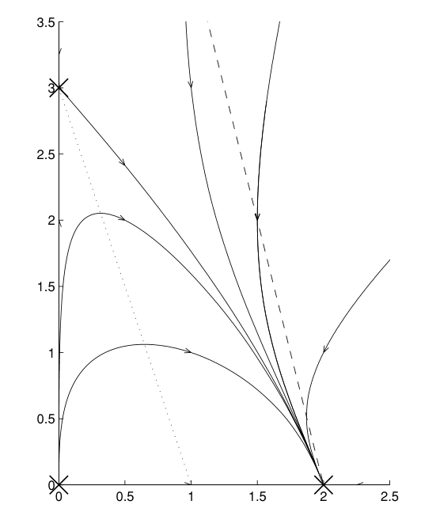
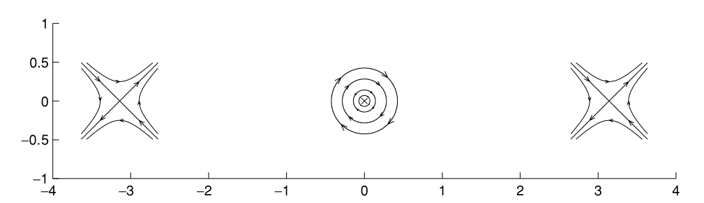
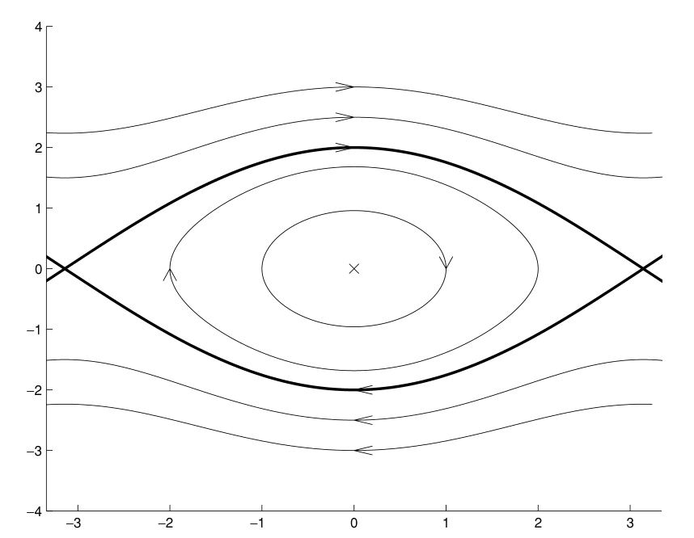
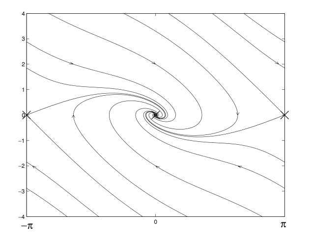

Coupled Nonlinear Systems and the Phase Plane
Autonomous nonlinear planar systems: population models and Newtonian dynamics, planar stability definitions, the p-q diagram, the four-step linearisation method, Poincaré / Hartman-Grobman, the undamped and damped pendulums, the double-well oscillator and worked competition systems.
Most realistic differential equations — two competing species, a pendulum swinging through large angles, or a particle in a double-well potential — are nonlinear and have no closed-form solution $x(t), y(t)$. Instead of solving them explicitly, we understand their behaviour geometrically in the phase plane by locating every critical (stationary) point, linearising the system there through its Jacobian matrix $J(x^*, y^*)$, classifying each local portrait via eigenvalues and the Poincaré / Hartman-Grobman theorem, and stitching the local pictures together with nullclines and conserved energy curves.
This note follows the lecturer's handwritten notes (Notes03-05-Nov_v2.pdf, pp. 1–17, and Solved_exer_nonlinear_system.pdf, pp. 1–5; lectures of 3, 5 and 9–10 November) in their exact order and notation. Explanations extracted from handwritten scans are marked (reading of the handwritten notes). Textbook references point to J. C. Robinson, An Introduction to Ordinary Differential Equations (2004), Chapters 31–35 (printed page numbers). Material requested by Sheet 5 (probls_ch5_2627.pdf) beyond the lectures is explicitly marked extension. See also Topic 4 and Formula Sheet - Advanced Maths.
### Notation equivalence (Lecture notes vs Robinson)
| Concept | Lecture notes (Notes03-05-Nov_v2.pdf) | Robinson (2004), Ch. 31–35 |
|---|---|---|
| Planar system | $\dot x = f(x, y),\ \dot y = g(x, y)$ or $\dot{\vec x} = f(\vec x)$ | $\dot x = f(x, y),\ \dot y = g(x, y)$ or $\dot{\mathbf x} = \mathbf f(\mathbf x)$ |
| Equilibrium | critical point / stationary point $(x^*, y^*)$ (used interchangeably) | stationary point $(x^*, y^*)$ |
| Small perturbation | $x = x^* + \xi(t),\ y = y^* + \eta(t)$ | $\mathbf x = \mathbf x^* + \boldsymbol\xi$ (or $\tilde x, \tilde y$ in linear systems) |
| Linearisation matrix | Jacobian $J(x^*, y^*)$ | $D\mathbf f(x^*, y^*)$ |
| Real / complex eigenvectors | $\vec v_1, \vec v_2$ (real); $\vec\eta_\pm$ (complex) | $\mathbf v_1, \mathbf v_2$; $\boldsymbol\eta$ |
| Pendulum variables | angle $\theta$, angular velocity $v = \dot\theta$, natural frequency $\omega$, damping $k$ | $(x, y)$ with $\omega = 1$ |
| Linearisation theorem | Theorem (Poincaré) / Key Theorem (Hartman-Grobman) | Hartman-Grobman theorem (Sec. 32.4.3) |
1. Autonomous Nonlinear Systems and Population Models
- An autonomous nonlinear planar system has the form $\dot x = f(x, y),\ \dot y = g(x, y)$, where time $t$ does not appear explicitly on the right-hand side.
- Because explicit formulas for $x(t)$ and $y(t)$ are rarely available, our goal is the phase diagram (trajectories $(x(t), y(t))$ in the $(x, y)$-plane).
- Two-species population models live in the first quadrant $x, y \ge 0$ and differ only in the signs of the cross-interaction terms $xy$: competition ($-bxy, -cxy$), predator-prey ($-kaxy, +bxy$), and cooperation ($+bxy, +cxy$).
Slides: Notes03-05-Nov_v2.pdf, p. 1; Notes03-05-Nov_v2.pdf, p. 2; Robinson, Sec. 32.1, p. 309; Robinson, Sec. 33.1, p. 323
In Topic 4 we solved linear systems $\dot{\vec x} = A\vec x$ completely by finding eigenvalues and eigenvectors. Real engineering and biological systems, however, contain products like $xy$, powers like $x^3$, or trigonometric terms like $\sin\theta$. An autonomous nonlinear planar system is written as (Notes03-05-Nov_v2.pdf, p. 1; Robinson, Sec. 32.1, p. 309):
"Autonomous" means $f$ and $g$ depend only on the state $(x, y)$, not on $t$. Geometrically, the velocity vector $(f(x, y), g(x, y))$ at any point $(x, y)$ never changes with time, so trajectories never cross (by uniqueness from Picard's theorem). Even when finding an explicit formula for $(x(t), y(t))$ is impossible, we can still determine the long-term fate of every initial condition by sketching the phase diagram (phase portrait).
Population dynamics: two interacting species
Recall from Topic 1 that a single species grows exponentially ($\dot x = kx$) when resources are unlimited, or logistically ($\dot x = kx - mx^2$) when crowding limits growth. Now consider two species with populations $x(t) \ge 0$ and $y(t) \ge 0$ that share the same habitat (Notes03-05-Nov_v2.pdf, pp. 1–2; reading of the handwritten notes):
- Competition model ($A, B, a, b, c, d > 0$; Notes03-05-Nov_v2.pdf, pp. 1–2; Robinson, Sec. 33.1, p. 323):
If only one species is present (say $y \equiv 0$), the first equation reduces to the logistic equation $\dot x = x(A - ax)$ with carrying capacity $A/a$. The cross terms $-bxy$ and $-cxy$ are negative: the presence of species $y$ inhibits the growth of $x$, and the presence of $x$ inhibits the growth of $y$. Depending on the parameter ratios, the two species either coexist or one drives the other to extinction (see Section 10).
Here $x$ is the prey and $y$ is the predator. Without predators ($y = 0$), the prey grows exponentially ($\dot x = kx$). Without prey ($x = 0$), the predator starves exponentially ($\dot y = -sy$). The interaction terms have opposite signs: $-kaxy < 0$ (predators eat prey, inhibiting $x$) and $+bxy > 0$ (eating prey feeds predators, favouring $y$). (Note: Robinson, Sec. 33.2, p. 331 also studies a variant with a logistic prey term $-ax^2$.)
- Cooperation (mutualism) model ($A, B, a, b, c, d > 0$; Notes03-05-Nov_v2.pdf, p. 2; Robinson, Ex. 33.2, p. 339):
Both cross terms $+bxy$ and $+cxy$ are positive: each species enhances the environment for the other, while the self-limiting terms $-ax^2$ and $-dy^2$ prevent uncontrolled growth when crowding becomes severe (if $ad > bc$; otherwise populations can blow up).
2. Newtonian Dynamics, Friction and the Pendulum
- A particle of mass $m$ moving on a line under a potential $V(x)$ has mechanical energy $E = \frac{1}{2}m\dot x^2 + V(x)$; setting $\dot E = 0$ and applying the chain rule yields Newton's equation $m\ddot x + V'(x) = 0$.
- Introducing the velocity $y = \dot x$ converts any second-order mechanical ODE into a first-order planar system in the $(x, y)$ phase plane.
- Adding linear viscous friction $-k\dot x$ breaks energy conservation: $\dot E = -k\dot x^2 \le 0$, so energy decreases along every moving trajectory.
- The simple pendulum ($\ddot\theta = -\omega^2\sin\theta$) and damped pendulum ($\ddot\theta = -k\dot\theta - \omega^2\sin\theta$) follow immediately with $v = \dot\theta$.
Slides: Notes03-05-Nov_v2.pdf, p. 2; Notes03-05-Nov_v2.pdf, p. 3; Notes03-05-Nov_v2.pdf, p. 4; Robinson, Sec. 34.1, p. 341; Robinson, Sec. 34.3, p. 347
Consider a particle of mass $m$ moving along the $x$-axis under a conservative force derived from a potential energy function $V(x)$ (Notes03-05-Nov_v2.pdf, pp. 2–3; Robinson, Sec. 34.1, p. 341). Its total mechanical energy is the sum of kinetic and potential energy:
Dimensional check (SI): $[m] = \mathrm{kg}$, $[\dot x] = \mathrm{m\,s^{-1}}$, so $[\frac{1}{2}m\dot x^2] = \mathrm{kg\,m^2\,s^{-2}} = \mathrm{J}$, matching $[V(x)] = \mathrm{J}$.
Derivation of the equation of motion from energy conservation
Why start from energy? Because when no friction acts, $E$ is constant in time ($\dot E = 0$), and differentiating $E(t)$ gives the equation of motion in two lines. We apply the chain rule to both terms:
- $\dfrac{d}{dt}\left[\frac{1}{2}m(\dot x)^2\right] = \frac{1}{2}m \cdot 2\dot x \cdot \dfrac{d}{dt}(\dot x) = m\dot x\ddot x$,
- $\dfrac{d}{dt}\big[V(x(t))\big] = V'(x(t))\,\dfrac{dx}{dt} = V'(x)\dot x$.
Therefore (Notes03-05-Nov_v2.pdf, p. 3):
Assuming the particle is not permanently at rest ($\dot x \not\equiv 0$), the factor in parentheses must vanish:
Notice the physical meaning: $F(x) = -V'(x)$ is the conservative force, always pointing "downhill" toward lower potential energy ($[V'(x)] = \mathrm{J\,m^{-1}} = \mathrm{N} = [m\ddot x]$). To analyse this second-order ODE in the phase plane, we reduce its order by introducing the velocity variable $y = \dot x$. Then $\dot y = \ddot x$, giving the coupled first-order system (Notes03-05-Nov_v2.pdf, p. 3):
Adding friction proportional to velocity
If a linear viscous drag force $F_{\text{drag}} = -k\dot x$ ($k > 0$, units $[k] = \mathrm{N\,s\,m^{-1}} = \mathrm{kg\,s^{-1}}$) also acts on the particle, Newton's second law becomes (Notes03-05-Nov_v2.pdf, p. 3; Robinson, Sec. 34.3, p. 347):
Let us check what happens to the total energy $E = \frac{1}{2}m\dot x^2 + V(x)$ along a trajectory of this damped system, using the chain rule again:
Because $k > 0$ and $(\dot x)^2 \ge 0$, the mechanical energy strictly decreases whenever the particle moves ($\dot x \neq 0$) and is stationary only at rest ($\dot x = 0$). Limiting case: setting $k = 0$ recovers $\dot E = 0$ and the conservative system above.
The simple pendulum (undamped and damped)
For a rigid pendulum of length $\ell$ swinging through an angle $\theta(t)$ under gravity $g$, we derived in Topic 1 and Topic 3 that $\ddot\theta = -\omega^2\sin\theta$, where $\omega = \sqrt{g/\ell}$ has units $[\omega] = \sqrt{\mathrm{m\,s^{-2}}/\mathrm{m}} = \mathrm{s^{-1}}$ (so $\omega^2\sin\theta$ has units $\mathrm{rad\,s^{-2}}$, matching $\ddot\theta$). Setting $v = \dot\theta$ converts the second-order ODE into a planar system (Notes03-05-Nov_v2.pdf, pp. 3–4; Robinson, Sec. 35.1–35.2, pp. 352, 356):
Here $[k] = \mathrm{s^{-1}}$ (damping coefficient divided by $m\ell^2$), so $kv$ has units $\mathrm{rad\,s^{-2}}$, dimensionally consistent with $\dot v$.
3. Critical Points and Planar Stability Definitions
- A critical point (also called an equilibrium or stationary point) is a point $(x^*, y^*)$ where $f(x^*, y^*) = g(x^*, y^*) = 0$: if a trajectory starts there, it stays there forever.
- A critical point is isolated if some disc around it contains no other critical points.
- Stable (Lyapunov): given any target disc of radius $R > 0$, there is a smaller starting disc of radius $r \le R$ such that every trajectory starting inside $r$ stays inside $R$ for all $t > t_0$.
- Asymptotically stable: it is stable and every trajectory starting inside some disc of radius $r_0$ actually tends to $(x^*, y^*)$ as $t \to \infty$. Unstable means not stable.
Slides: Notes03-05-Nov_v2.pdf, p. 5; Notes03-05-Nov_v2.pdf, p. 6; Robinson, Sec. 7.2, p. 48
Before linearising, we must state precisely what "stable" means in two dimensions. Notice that Robinson only gives the one-dimensional definition (Robinson, Sec. 7.2, p. 48); the planar disc definitions below come directly from the lecturer's notes (Notes03-05-Nov_v2.pdf, pp. 5–6; reading of the handwritten notes).
Given $\dot x = f(x, y),\ \dot y = g(x, y)$:
- Critical (equilibrium / stationary) point: a point $(x_0, y_0)$ (also written $(x^*, y^*)$) where $f(x_0, y_0) = g(x_0, y_0) = 0$.
- Isolated critical point: there exists a disc centred at $(x_0, y_0)$ that contains no other critical points. We assume all critical points we study are isolated.
- Trajectory tending to $(x_0, y_0)$: a solution $(x(t), y(t))$ tends to $(x_0, y_0)$ if $$\lim_{t\to\infty} x(t) = x_0 \qquad\text{and}\qquad \lim_{t\to\infty} y(t) = y_0.$$
- Stable (in the sense of Lyapunov): for every radius $R > 0$, there exists a radius $r \le R$ such that any trajectory that is inside the disc $(x - x_0)^2 + (y - y_0)^2 \le r^2$ at some time $t = t_0$ remains inside $(x - x_0)^2 + (y - y_0)^2 \le R^2$ for all $t > t_0$.
- Asymptotically stable: the critical point is stable and there exists a radius $r_0 > 0$ such that every trajectory inside $(x - x_0)^2 + (y - y_0)^2 \le r_0^2$ tends to $(x_0, y_0)$ as $t \to \infty$.
- Unstable: any critical point that is not stable.
On page 6, the handwritten notes write the discs as $x^2 + y^2 \le r^2$ and $x^2 + y^2 \le R^2$ (implicitly shifting the critical point $(x_0, y_0)$ to the origin $(0, 0)$) and write $x^2 + y^2 \le r_0$ without the square on $r_0$ in the asymptotic stability definition (reading of the handwritten notes). For a general critical point $(x_0, y_0)$ and consistent length units, the disc of radius $r_0$ is $(x - x_0)^2 + (y - y_0)^2 \le r_0^2$.
Why the distinction between stable and asymptotically stable matters: a centre (like the bottom equilibrium of an ideal frictionless pendulum) is stable because small oscillations stay close to the equilibrium forever, but it is not asymptotically stable because trajectories never decay back to the exact equilibrium point. A stable spiral or stable node (like the damped pendulum) is asymptotically stable.
4. Linear Stability Types and the $p$–$q$ Diagram
- For a $2\times 2$ linear system with characteristic polynomial $\lambda^2 + p\lambda + q = 0$ (where $p = -\operatorname{tr}J$ and $q = \det J$), the eigenvalues are $\lambda_\pm = \frac{-p \pm \sqrt{p^2 - 4q}}{2}$.
- The sign of $q$, the sign of $p$, and the discriminant $\Delta = p^2 - 4q$ split the $(p, q)$ plane into every linear phase portrait type.
- Asymptotically stable points live strictly in the first quadrant ($p > 0, q > 0$); centres sit on the positive $q$-axis ($p = 0, q > 0$); saddles fill the entire lower half-plane ($q < 0$).
Slides: Notes03-05-Nov_v2.pdf, p. 6; Notes03-05-Nov_v2.pdf, p. 7; Robinson, Ch. 31, p. 301
Before tackling nonlinear systems, the notes review the classification of linear systems from Topic 4 (Notes03-05-Nov_v2.pdf, p. 6; Robinson, Ch. 31, p. 301):
| Eigenvalue case | Condition | Type of critical point | Stability |
|---|---|---|---|
| Two distinct real | $\lambda_1, \lambda_2 < 0$ | Stable node | Asymptotically stable |
| Two distinct real | $\lambda_1, \lambda_2 > 0$ | Unstable node | Unstable |
| Two distinct real | $\lambda_2 < 0 < \lambda_1$ | Saddle point | Unstable |
| Repeated real | $\lambda < 0$ | Stable star / improper node | Asymptotically stable |
| Repeated real | $\lambda > 0$ | Unstable star / improper node | Unstable |
| Complex conjugate | $\operatorname{Re}(\lambda_\pm) < 0$ | Stable spiral | Asymptotically stable |
| Complex conjugate | $\operatorname{Re}(\lambda_\pm) > 0$ | Unstable spiral | Unstable |
| Complex conjugate | $\operatorname{Re}(\lambda_\pm) = 0$ | Centre | Stable (not asymptotically) |
The $p$–$q$ stability diagram (Notes03-05-Nov_v2.pdf, p. 7)
This diagram is not in Robinson — it is a signature tool of the class notes. Write the characteristic polynomial of a $2\times 2$ matrix $A$ (or Jacobian $J$) as
so $p = -\operatorname{tr}J = -(\lambda_1 + \lambda_2)$ and $q = \det J = \lambda_1\lambda_2$. By the quadratic formula,
Reading the signs of $p$, $q$, and the discriminant $p^2 - 4q$:
- $q < 0$ (lower half-plane): $\lambda_1\lambda_2 = q < 0$, so the eigenvalues are real with opposite signs → saddle point (always unstable).
- $q > 0$ and $p^2 - 4q > 0$ (below the parabola $q = p^2/4$): two distinct real eigenvalues of the same sign. Since $\lambda_1 + \lambda_2 = -p$, both are negative if $p > 0$ (stable node) and both are positive if $p < 0$ (unstable node).
- $q > 0$ and $p^2 - 4q = 0$ (on the parabola $q = p^2/4$): repeated real eigenvalue $\lambda = -p/2$ → stable improper node / star ($p > 0$) or unstable improper node / star ($p < 0$).
- $q > 0$ and $p^2 - 4q < 0$ (inside the parabola): complex conjugate pair $\lambda_\pm = -\frac{p}{2} \pm i\frac{\sqrt{4q - p^2}}{2}$ → stable spiral ($p > 0$), unstable spiral ($p < 0$), or centre ($p = 0$, the positive $q$-axis).
- $q = 0$ (the $p$-axis): at least one eigenvalue is zero → degenerate cases (non-isolated line of equilibria).
5. The Four-Step Method: Critical Points, Linearisation and Local Study
- Step 1: Solve $f(x^*, y^*) = 0$ and $g(x^*, y^*) = 0$ simultaneously to list every critical (stationary) point $(x^*, y^*)$.
- Step 2: Substitute $x(t) = x^* + \xi(t)$ and $y(t) = y^* + \eta(t)$, expand $f$ and $g$ in first-order Taylor series, and drop higher-order terms to obtain the linearised system $(\dot\xi, \dot\eta)^T = J(x^*, y^*)(\xi, \eta)^T$.
- Step 3: Compute the eigenvalues and eigenvectors of $J(x^*, y^*)$ at each critical point and sketch the local linear phase portrait around it.
Slides: Notes03-05-Nov_v2.pdf, p. 7; Notes03-05-Nov_v2.pdf, p. 8; Notes03-05-Nov_v2.pdf, p. 9; Robinson, Sec. 32.4.1–32.4.4, pp. 314–319
How do we draw the phase portrait of a nonlinear system $\dot x = f(x, y),\ \dot y = g(x, y)$? The notes give a four-step procedure (Notes03-05-Nov_v2.pdf, pp. 7–9; Robinson, Sec. 32.4, p. 314).
Step 1: Find all stationary (critical) points
Solve the algebraic system
for all real pairs $(x^*, y^*) \in \mathbb{R}^2$ (or $x^*, y^* \ge 0$ in population models). Always factor each equation first and check every branch so no critical point is missed.
Step 2: Linearise near each stationary point
Why linearise? Close to $(x^*, y^*)$, the smooth functions $f$ and $g$ look like their tangent planes. Write a small displacement (perturbation) from the equilibrium as
where $|\xi|$ and $|\eta|$ are small. Because $x^*$ and $y^*$ are constants, differentiating with respect to $t$ gives $\dot x = \dot\xi$ and $\dot y = \dot\eta$. Now expand $f(x, y)$ in a two-variable Taylor series around $(x^*, y^*)$ (Notes03-05-Nov_v2.pdf, pp. 7–8; Robinson, Sec. 32.4.2, p. 315):
and identically for $g$:
Here the constant terms $f(x^*, y^*)$ and $g(x^*, y^*)$ vanish precisely because $(x^*, y^*)$ is a critical point. In the notes' compact gradient notation, the linear term is $\nabla f(x^*, y^*)^T \cdot (\xi, \eta)$. When $|\xi|$ and $|\eta|$ are sufficiently small, the quadratic and higher-order terms are negligible compared to the linear terms, so we drop them and obtain the linearised system (Notes03-05-Nov_v2.pdf, p. 8):
where $J(x^*, y^*)$ is the Jacobian matrix of $(f, g)^T$ evaluated at $(x^*, y^*)$.
Step 3: Conduct the local study
At each critical point $(x^*, y^*)$, $J(x^*, y^*)$ is a constant $2\times 2$ matrix, so we apply the linear theory of Topic 4: compute its eigenvalues $\lambda_\pm$, its eigenvectors $\vec v_1, \vec v_2$ (or $\vec\eta_\pm$ if complex), and sketch the local phase portrait in a small neighbourhood of $(x^*, y^*)$ (Notes03-05-Nov_v2.pdf, pp. 8–9; Robinson, Sec. 32.4.4, p. 318).
- If $J(x^*, y^*) = \begin{pmatrix} 2 & 0 \\ 0 & 2 \end{pmatrix}$, then $\lambda = 2$ is a repeated eigenvalue with two independent eigenvectors $(1, 0)^T$ and $(0, 1)^T$, giving an unstable star at $(x^*, y^*)$.
- If $J(x^*, y^*) = \begin{pmatrix} -1 & 0 \\ -3 & -2 \end{pmatrix}$ (lower-triangular, so the eigenvalues are the diagonal entries $\lambda_1 = -1$ and $\lambda_2 = -2$), both eigenvalues are negative and distinct, giving a stable node at $(x^*, y^*)$.
6. Poincaré / Hartman-Grobman Theorem and the Global Picture
- Theorem (Poincaré) / Hartman-Grobman: if every eigenvalue of $J(x^*, y^*)$ has non-zero real part (a hyperbolic point: node, saddle, or spiral), then sufficiently close to $(x^*, y^*)$ the nonlinear phase portrait has the exact same qualitative type as the linearised portrait.
- Borderline cases fail: a linear centre ($\operatorname{Re}\lambda = 0$) can become a nonlinear centre or a stable/unstable spiral; a linear improper node ($p^2 = 4q$) can become a node or a spiral.
- Step 4 (Global picture): join the local portraits consistently across the plane using nullclines ($f(x, y) = 0$ where flow is vertical; $g(x, y) = 0$ where flow is horizontal) and, for conservative systems, level curves of energy $E(x, y) = \text{const}$.
Slides: Notes03-05-Nov_v2.pdf, p. 9; Notes03-05-Nov_v2.pdf, p. 10; Robinson, Sec. 32.3, p. 313; Robinson, Sec. 32.4.3, p. 316; Robinson, Sec. 32.4.5, p. 320
Dropping higher-order terms in Step 2 raises an essential question: does the true nonlinear system really behave like its linearisation near $(x^*, y^*)$? Step 4 begins with the theorem that justifies the entire method (Notes03-05-Nov_v2.pdf, pp. 9–10; reading of the handwritten notes):
- Poincaré wording (Notes p. 9): If the critical point of the linearised system is a stable/unstable node, a saddle point, or a stable/unstable spiral, then the critical point of the nonlinear system is of the same type.
- Hartman-Grobman wording (Notes p. 10; Robinson Sec. 32.4.3): The phase portrait of a nonlinear system looks qualitatively like the linearised phase portrait sufficiently close to a stationary point provided that the eigenvalues of $J(x^*, y^*)$ have non-zero real part.
- Borderline cases where higher-order terms can change the type:
- Linear centre ($\operatorname{Re}\lambda = 0$) $\longrightarrow$ nonlinear centre or spiral (stable or unstable).
- Linear improper node / star ($p^2 = 4q$) $\longrightarrow$ nonlinear node or spiral (though its stability — stable vs unstable — is still preserved because $\operatorname{Re}\lambda \neq 0$).
Why do centres fail? On the $p$–$q$ diagram, a centre sits on the razor-thin boundary $p = 0$ between stable spirals ($p > 0$) and unstable spirals ($p < 0$). Even a tiny cubic term can nudge trajectories slightly inward (turning the centre into a stable spiral) or slightly outward (unstable spiral). We will prove this explicitly in Section 11 (Exercise 5.1).
Step 4: "Join the dots" — building the global picture with nullclines
Once every critical point has its local portrait, we connect them across the plane without trajectories ever crossing (Notes03-05-Nov_v2.pdf, p. 10; Robinson, Sec. 32.3, p. 313 & Sec. 32.4.5, p. 320). Two tools make this systematic:
- Nullclines:
- The $x$-nullcline is the curve $f(x, y) = 0$. On it, $\dot x = 0$, so every trajectory crosses it vertically (upward if $g > 0$, downward if $g < 0$).
- The $y$-nullcline is the curve $g(x, y) = 0$. On it, $\dot y = 0$, so every trajectory crosses it horizontally (rightward if $f > 0$, leftward if $f < 0$).
- The nullclines divide the plane into regions where the signs of $(\dot x, \dot y)$ are constant (NE, NW, SE, SW), and critical points are simply the intersections of an $x$-nullcline with a $y$-nullcline.
- Conserved quantities (energy): for conservative mechanical systems, trajectories are the level curves $E(x, y) = \text{const}$, which immediately settles linear centres as true nonlinear centres (Sections 7 and 9).

7. Complete Example: The Undamped Simple Pendulum
- For $\dot\theta = v,\ \dot v = -\sin\theta$ ($\omega = 1$), the critical points are $(k\pi, 0)$ for $k \in \mathbb{Z}$.
- $k$ even (hanging down): $\lambda_\pm = \pm i$ (linear centre, clockwise); $k$ odd (balanced upright): $\lambda_\pm = \pm 1$ (saddle point, $\vec v_1 = (1, 1)^T,\ \vec v_2 = (1, -1)^T$).
- Energy conservation $E = \frac{1}{2}v^2 - \cos\theta = \text{const}$ proves the even equilibria are true nonlinear centres and gives the exact orbits $v = \pm\sqrt{2(E + \cos\theta)}$.
- Three physical regimes: $E < 1$ (oscillations about $\theta = 0$), $E = 1$ (separatrices connecting $-\pi$ and $+\pi$), and $E > 1$ (continuous rotation over the top).
Slides: Notes03-05-Nov_v2.pdf, p. 10; Notes03-05-Nov_v2.pdf, p. 11; Notes03-05-Nov_v2.pdf, p. 12; Robinson, Sec. 35.1, pp. 352–355
We now apply all four steps to the undamped pendulum with $\omega = 1$ (Notes03-05-Nov_v2.pdf, pp. 10–12; Robinson, Sec. 35.1, pp. 352–355; Sheet 5, Ex. 5.8):
Step 1: Critical points
Setting $\dot\theta = 0$ gives $v = 0$; setting $\dot v = 0$ gives $-\sin\theta = 0 \implies \theta = k\pi$ for every integer $k \in \mathbb{Z}$. Thus the critical points are $(k\pi, 0)$:
- $k$ even ($\theta = 0, \pm 2\pi, \dots$): the pendulum hangs straight down at rest.
- $k$ odd ($\theta = \pm\pi, \pm 3\pi, \dots$): the pendulum is balanced straight up at rest.
Step 2: Linearisation
Computing the partial derivatives of $f(\theta, v) = v$ and $g(\theta, v) = -\sin\theta$:
Step 3: Local study
- Case 1: $k$ even ($\cos(k\pi) = +1$, so $-\cos(k\pi) = -1$): $$J(k\pi, 0) = \begin{pmatrix} 0 & 1 \\ -1 & 0 \end{pmatrix}, \qquad \det(J - \lambda I) = (-\lambda)(-\lambda) - (-1)(1) = \lambda^2 + 1 = 0 \implies \lambda_\pm = \pm i.$$ For the eigenvectors, $(J - \lambda_\pm I)\vec\eta_\pm = \begin{pmatrix} \mp i & 1 \\ -1 & \mp i \end{pmatrix}\vec\eta_\pm = \vec 0$ gives $\mp i\eta_1 + \eta_2 = 0 \implies \eta_2 = \pm i\eta_1$, so $$\vec\eta_\pm = \begin{pmatrix} 1 \\ \pm i \end{pmatrix} = \begin{pmatrix} 1 \\ 0 \end{pmatrix} \pm i\begin{pmatrix} 0 \\ 1 \end{pmatrix}.$$ Because $\operatorname{Re}(\lambda_\pm) = 0$, the linearised system has a centre. Sense of rotation: on the upper half-plane ($v > 0$), $\dot\theta = v > 0$, so $\theta$ increases (trajectories move to the right above the $\theta$-axis and to the left below it) → clockwise.
- Case 2: $k$ odd ($\cos(k\pi) = -1$, so $-\cos(k\pi) = +1$): $$J(k\pi, 0) = \begin{pmatrix} 0 & 1 \\ 1 & 0 \end{pmatrix}, \qquad \det(J - \lambda I) = \lambda^2 - 1 = 0 \implies \lambda_1 = +1,\ \lambda_2 = -1.$$ Both eigenvalues are real with opposite signs → saddle point (hyperbolic, so Hartman-Grobman guarantees a true saddle for the nonlinear system). Eigenvectors from $(J - \lambda_\pm I)\vec v = \begin{pmatrix} \mp 1 & 1 \\ 1 & \mp 1 \end{pmatrix}\vec v = \vec 0$: $$\lambda_1 = +1 \implies \vec v_1 = \begin{pmatrix} 1 \\ 1 \end{pmatrix} \text{ (unstable, outward)}, \qquad \lambda_2 = -1 \implies \vec v_2 = \begin{pmatrix} 1 \\ -1 \end{pmatrix} \text{ (stable, inward)}.$$

Step 4: Global picture via energy conservation
Because Hartman-Grobman cannot confirm that the linear centres at $(k\pi, 0)$ ($k$ even) remain centres for the nonlinear pendulum, we invoke conservation of energy (Notes03-05-Nov_v2.pdf, pp. 11–12; Robinson, Sec. 35.1, p. 354). Define
Let us verify $\dot E = 0$ explicitly by the chain rule:
Hence $E$ is strictly constant along every trajectory! Solving for $v$ gives the exact equation of every phase-plane curve:
Since $\cos\theta \in [-1, 1]$, the expression $E + \cos\theta$ must be non-negative for real $v$. This gives three physical regimes separated by the critical energy $E = 1$ (Notes03-05-Nov_v2.pdf, p. 12):
- Low energy ($-1 < E < 1$): $E + \cos\theta \ge 0$ only on a bounded interval $|\theta| \le \arccos(-E) < \pi$. At the turning points $\theta = \pm\arccos(-E)$, $v = 0$. The curves are closed loops encircling $(0, 0)$ (and $(2k\pi, 0)$): the pendulum oscillates back and forth around the downward vertical, proving rigorously that $(2k\pi, 0)$ are true nonlinear centres. (Limiting case $E \to -1^+$: $\theta \approx 0$, $-\cos\theta \approx -1 + \frac{1}{2}\theta^2$, so $v^2 + \theta^2 \approx 2(E+1)$ — small-angle harmonic circles!)
- Critical energy ($E = 1$): $v = \pm\sqrt{2(1 + \cos\theta)} = \pm 2\cos(\theta/2)$ on $[-\pi, \pi]$. These two bold curves — the separatrices (heteroclinic orbits) — connect the upright saddles $(-\pi, 0)$ and $(\pi, 0)$. Physically, the pendulum has just enough energy to swing up and approach the upright position asymptotically as $t \to \infty$ (it takes infinite time to reach the saddle).
- High energy ($E > 1$): $E + \cos\theta \ge E - 1 > 0$ for all $\theta \in \mathbb{R}$, so $v$ never vanishes. The curve splits into two disconnected wavy lines — one in $v > 0$ (continuous counterclockwise whirling over the top) and one in $v < 0$ (continuous clockwise whirling).

8. Complete Example: The Damped Pendulum
- For $\dot\theta = v,\ \dot v = -kv - \sin\theta$ ($k > 0$), the critical points are still $(m\pi, 0)$ ($m \in \mathbb{Z}$), with $J(m\pi, 0) = \begin{pmatrix} 0 & 1 \\ (-1)^{m+1} & -k \end{pmatrix}$.
- Eigenvalues: $\lambda_\pm = \frac{-k \pm \sqrt{k^2 - 4\cos(m\pi)}}{2}$.
- $m$ even (downward): stable spiral ($0 < k < 2$, underdamped), stable improper node ($k = 2$, critically damped), stable node ($k > 2$, overdamped), or centre ($k = 0$).
- $m$ odd (upright): saddle point for all $k > 0$.
- Because $\dot E = -kv^2 \le 0$, almost every trajectory loses energy and eventually spirals into one of the downward equilibria $(2n\pi, 0)$.
Slides: Notes03-05-Nov_v2.pdf, p. 12; Notes03-05-Nov_v2.pdf, p. 13; Notes03-05-Nov_v2.pdf, p. 14; Robinson, Sec. 35.2, pp. 356–357
Now add viscous damping $k > 0$ to the unit-frequency pendulum (Notes03-05-Nov_v2.pdf, pp. 12–14; Robinson, Sec. 35.2, pp. 356–357; Sheet 5, Ex. 5.9):
Steps 1 & 2: Critical points and Jacobian
Setting $\dot\theta = 0 \implies v = 0$, and then $\dot v = -k(0) - \sin\theta = 0 \implies \theta = m\pi$ ($m \in \mathbb{Z}$). The Jacobian matrix is
since $\cos(m\pi) = (-1)^m$ and therefore $-\cos(m\pi) = (-1)^{m+1}$.
Step 3: Eigenvalues and damping regimes
The characteristic polynomial is
giving (Notes03-05-Nov_v2.pdf, p. 13):
- $m$ even ($\cos(m\pi) = +1$): $\lambda_\pm = \dfrac{-k \pm \sqrt{k^2 - 4}}{2}$.
- $0 < k < 2$ (underdamped): $k^2 - 4 < 0$, complex conjugate pair with negative real part $-\frac{k}{2} < 0$ → stable spiral (asymptotically stable).
- $k = 2$ (critically damped): repeated real root $\lambda = -1 < 0$ with $J \neq -I$ → stable improper node (asymptotically stable).
- $k > 2$ (overdamped): two distinct negative real roots (since $\sqrt{k^2 - 4} < k$) → stable node (asymptotically stable).
- $k = 0$ (limiting case): $\lambda_\pm = \pm i$ → recovers the undamped centre.
- $m$ odd ($\cos(m\pi) = -1$): $\lambda_\pm = \dfrac{-k \pm \sqrt{k^2 + 4}}{2}$. Since $\sqrt{k^2 + 4} > k$, we have $\lambda_+ > 0$ and $\lambda_- < 0$ → saddle point for every $k \ge 0$.
All critical points for $k > 0$ are hyperbolic ($\operatorname{Re}\lambda \neq 0$), so Hartman-Grobman guarantees the nonlinear portrait matches the linearised type at every single equilibrium!
Worked numerical case from the notes: $k = \sqrt{2}$ (Notes03-05-Nov_v2.pdf, pp. 13–14)
Choosing $0 < k = \sqrt{2} < 2$ for concreteness:
- $m$ even ($J = \begin{pmatrix} 0 & 1 \\ -1 & -\sqrt{2} \end{pmatrix}$): $$\lambda_\pm = \frac{-\sqrt{2} \pm \sqrt{2 - 4}}{2} = -\frac{\sqrt{2}}{2} \pm i\frac{\sqrt{2}}{2}.$$ To find $\vec\eta_\pm$, solve $(J - \lambda_\pm I)\vec\eta_\pm = \vec 0$: $$\begin{pmatrix} \frac{\sqrt{2}}{2} \mp i\frac{\sqrt{2}}{2} & 1 \\ -1 & -\frac{\sqrt{2}}{2} \mp i\frac{\sqrt{2}}{2} \end{pmatrix}\begin{pmatrix} \eta_1 \\ \eta_2 \end{pmatrix} = \begin{pmatrix} 0 \\ 0 \end{pmatrix}.$$ From the first row, $\eta_2 = -\left(\frac{\sqrt{2}}{2} \mp i\frac{\sqrt{2}}{2}\right)\eta_1 = \left(-\frac{\sqrt{2}}{2} \pm i\frac{\sqrt{2}}{2}\right)\eta_1$. Setting $\eta_1 = 1$: $$\vec\eta_\pm = \begin{pmatrix} 1 \\ -\frac{\sqrt{2}}{2} \pm i\frac{\sqrt{2}}{2} \end{pmatrix} = \begin{pmatrix} 1 \\ -\frac{\sqrt{2}}{2} \end{pmatrix} \pm i\begin{pmatrix} 0 \\ \frac{\sqrt{2}}{2} \end{pmatrix}.$$ Check the second row: $(-1)(1) + \left(-\frac{\sqrt{2}}{2} \mp i\frac{\sqrt{2}}{2}\right)\left(-\frac{\sqrt{2}}{2} \pm i\frac{\sqrt{2}}{2}\right) = -1 + \left(\frac{1}{2} + \frac{1}{2}\right) = 0$. It is a clockwise stable spiral (since $\dot\theta = v > 0$ in the upper half-plane).
- $m$ odd ($J = \begin{pmatrix} 0 & 1 \\ 1 & -\sqrt{2} \end{pmatrix}$): $$\lambda_\pm = \frac{-\sqrt{2} \pm \sqrt{2 + 4}}{2} = -\frac{\sqrt{2}}{2} \pm \frac{\sqrt{6}}{2} \qquad (\lambda_+ \approx +0.518 > 0,\ \lambda_- \approx -1.932 < 0).$$ Solving $(J - \lambda_\pm I)\vec v_\pm = \begin{pmatrix} \frac{\sqrt{2} \mp \sqrt{6}}{2} & 1 \\ 1 & \frac{-\sqrt{2} \mp \sqrt{6}}{2} \end{pmatrix}\vec v_\pm = \vec 0$, taking $v_1 = 2$ gives $v_2 = -\sqrt{2} \pm \sqrt{6}$: $$\vec v_+ = \begin{pmatrix} 2 \\ -\sqrt{2} + \sqrt{6} \end{pmatrix} \text{ (unstable, outward)}, \qquad \vec v_- = \begin{pmatrix} 2 \\ -\sqrt{2} - \sqrt{6} \end{pmatrix} \text{ (stable, inward)}.$$
Three small slips appear in the source material — none changes the final physical picture, and each is corrected above:
- Notes p. 13 writes $+\frac{\sqrt{2}}{2} \mp \frac{\sqrt{2}i}{2}$ in the $(2, 2)$ entry of $J - \lambda_\pm I$ instead of $-\sqrt{2} - \lambda_\pm = -\frac{\sqrt{2}}{2} \mp \frac{\sqrt{2}i}{2}$ (reading of the handwritten notes). The eigenvector $\vec\eta_\pm$ obtained from the first row is unaffected and correct.
- Notes p. 14 shifts the $\theta$-axis labels in the bottom global sketch by $\pi$ (drawing saddles at $0, \pm 2\pi$ and spirals at $\pm\pi$). As proved on p. 13, even multiples ($0, \pm 2\pi$) are the stable spirals and odd multiples ($\pm\pi$) are the saddles.
- Robinson, p. 357 prints the linearised matrix at $(0, 0)$ as $\begin{pmatrix} 0 & -1 \\ 1 & -k \end{pmatrix}$ instead of $\begin{pmatrix} 0 & 1 \\ -1 & -k \end{pmatrix}$ (the characteristic polynomial $\lambda^2 + k\lambda + 1 = 0$ happens to be unchanged).
Step 4: Global picture and physical meaning
Differentiating the undamped energy $E = \frac{1}{2}v^2 - \cos\theta$ along trajectories of the damped pendulum gives
Every moving pendulum loses energy continuously. Even if launched with high speed ($v \gg 1$), it may whirl over the top several times, crossing $\theta = \pi, 3\pi, \dots$, until its energy drops below $1$, at which point it is captured into the basin of attraction of one of the downward equilibria $(2n\pi, 0)$ and spirals to rest. Only the measure-zero stable manifolds of the saddles $( (2n+1)\pi, 0 )$ balance upright as $t \to \infty$.

9. Complete Example: Double-Well Oscillator — Exercise 5.4 (ii)
- A unit-mass particle in the symmetric double-well potential $V(x) = \frac{1}{2}x^4 - x^2$ obeys $\dot x = y,\ \dot y = -V'(x) = -2x(x^2 - 1)$.
- Three critical points: $(0, 0)$ is a saddle ($\lambda = \pm\sqrt{2}$, local maximum of $V$); $(\pm 1, 0)$ are centres ($\lambda = \pm 2i$, local minima of $V$ with $V(\pm 1) = -\frac{1}{2}$).
- Energy $E = \frac{1}{2}y^2 + \frac{1}{2}x^4 - x^2$ is conserved: $-\frac{1}{2} < E < 0$ traps the particle inside either the left or right well; $E = 0$ forms a figure-eight homoclinic separatrix; $E > 0$ produces large oscillations visiting both wells.
Slides: Notes03-05-Nov_v2.pdf, p. 15; Notes03-05-Nov_v2.pdf, p. 16; Notes03-05-Nov_v2.pdf, p. 17; Robinson, Sec. 34.1, p. 341; probls_ch5_2627.pdf, p. 2
This example from class (Notes03-05-Nov_v2.pdf, pp. 15–17; Sheet 5, Ex. 5.4(ii)) shows how to read a conservative phase portrait directly from the shape of the potential $V(x)$.
Setup from energy conservation ($m = 1$)
With $V(x) = \frac{1}{2}x^4 - x^2$, the total energy is $E = \frac{1}{2}(\dot x)^2 + \frac{1}{2}x^4 - x^2$. By the chain rule, $\dot E = \dot x\ddot x + V'(x)\dot x = 0 \implies \ddot x = -V'(x) = -(2x^3 - 2x) = -2x^3 + 2x = -2x(x^2 - 1)$. Setting $y = \dot x$:
Step 1: Critical points
$y = 0$ and $-2x(x^2 - 1) = 0 \implies x = 0$ or $x = \pm 1$. There are three critical points: $(0, 0)$, $(-1, 0)$, and $(1, 0)$.
Step 2: Linearisation
Step 3: Local study
- At $(0, 0)$: $\det(J - \lambda I) = (-\lambda)(-\lambda) - (2)(1) = \lambda^2 - 2 = 0 \implies \lambda_\pm = \pm\sqrt{2}$ → saddle point. Solving $\begin{pmatrix} \mp\sqrt{2} & 1 \\ 2 & \mp\sqrt{2} \end{pmatrix}\vec v_\pm = \vec 0$ gives $\mp\sqrt{2}\,v_1 + v_2 = 0 \implies v_2 = \pm\sqrt{2}\,v_1$, or with $v_2 = 2$: $$\vec v_+ = \begin{pmatrix} \sqrt{2} \\ 2 \end{pmatrix} \text{ (outward)}, \qquad \vec v_- = \begin{pmatrix} -\sqrt{2} \\ 2 \end{pmatrix} \text{ (inward)}.$$
- At $(\pm 1, 0)$: $\det(J - \lambda I) = (-\lambda)(-\lambda) - (-4)(1) = \lambda^2 + 4 = 0 \implies \lambda_\pm = \pm 2i$ → linear centres (clockwise since $\dot x = y > 0$ for $y > 0$). Solving $\begin{pmatrix} \mp 2i & 1 \\ -4 & \mp 2i \end{pmatrix}\vec\eta_\pm = \vec 0$ gives $\mp 2i\eta_1 + \eta_2 = 0 \implies \eta_2 = \pm 2i\eta_1$; setting $\eta_1 = \pm i$ gives $\eta_2 = -2$, so $\vec\eta_\pm = \begin{pmatrix} \pm i \\ -2 \end{pmatrix} = \begin{pmatrix} 0 \\ -2 \end{pmatrix} \pm i\begin{pmatrix} 1 \\ 0 \end{pmatrix}$.
Step 4: Global picture and energy levels
Because $E = \frac{1}{2}y^2 + V(x)$ is strictly conserved ($\dot E = 0$), the trajectories are the level curves $y = \pm\sqrt{2(E - V(x))}$. Notice how the potential $V(x)$ has two equal minima at $x = \pm 1$ ($V(\pm 1) = -\frac{1}{2}$) separated by a hill at $x = 0$ ($V(0) = 0$):
- $-\frac{1}{2} < E < 0$ (low energy): the particle cannot clear the central barrier $V(0) = 0$, so it oscillates in closed loops around either $(-1, 0)$ or $(+1, 0)$ — confirming both are true nonlinear centres.
- $E = 0$ (critical energy): $y = \pm\sqrt{2x^2 - x^4} = \pm |x|\sqrt{2 - x^2}$, forming two symmetric homoclinic loops (a figure-eight separatrix) that leave and return to the saddle $(0, 0)$, reaching turning points at $x = \pm\sqrt{2}$.
- $E > 0$ (high energy): the particle clears the central hill and executes large periodic oscillations enclosing all three equilibria.
In Exercise 5.4(iii), the course problem sheet prints $V(x) = \frac{1}{2}x^6 - \frac{5}{4}x^4 + 2x^2$, whereas Robinson (p. 350) prints $V(x) = \frac{1}{6}x^6 - \frac{5}{4}x^4 + 2x^2$. Notice that the derivative of Robinson's version factors cleanly as $V'(x) = x(x^2 - 1)(x^2 - 4)$ (equilibria at $x = 0, \pm 1, \pm 2$), whereas the sheet's $\frac{1}{2}x^6$ gives $V'(x) = x(3x^4 - 5x^2 + 4)$ which has no real roots besides $x = 0$. Always check which version your lecturer wants when solving Ex. 5.4(iii).
10. Worked Competition Systems — Exercise 5.2 (i) and (ii)
- Two competing species can either end in competitive exclusion (one species wipes out the other, Ex. 5.2(i)) or stable coexistence (both survive at an interior equilibrium, Ex. 5.2(ii)).
- Ex. 5.2 (i): only three boundary equilibria exist ($A(0, 0)$ unstable star, $B(0, 1)$ saddle, $C(2, 0)$ stable improper node); for every $x_0 > 0$, $(x, y) \to (2, 0)$.
- Ex. 5.2 (ii): the nullclines cross in the first quadrant at $D(8/7, 6/7)$, a stable node ($\lambda_1 = -6/7, \lambda_2 = -2$), while $B(0, 1)$ and $C(2, 0)$ are both saddles: both species coexist.
Slides: Solved_exer_nonlinear_system.pdf, pp. 1–5; Robinson, Sec. 33.1, p. 323; probls_ch5_2627.pdf, p. 1
The lecturer solved Exercise 5.2 (i) and (ii) in full in Solved_exer_nonlinear_system.pdf (pp. 1–5) to show how the four-step method plus nullclines reveals biological outcomes.
Exercise 5.2 (i): Competitive exclusion (Solved_exer_nonlinear_system.pdf, pp. 1–3)
- Critical points:
- $x = 0, y = 0 \implies A = (0, 0)$.
- $x = 0, 2 - 2y = 0 \implies B = (0, 1)$.
- $y = 0, 2 - x = 0 \implies C = (2, 0)$.
- Interior ($x > 0, y > 0$): requires $x + y = 2$ and $x + y = 1$ simultaneously — impossible (parallel nullclines, no 4th critical point).
- Jacobian: Expanding $f = 2x - x^2 - xy$ and $g = 2y - 2xy - 2y^2$: $$J(x, y) = \begin{pmatrix} 2 - 2x - y & -x \\ -2y & 2 - 2x - 4y \end{pmatrix}.$$
- Local study:
- At $A(0, 0)$: $J(0, 0) = \begin{pmatrix} 2 & 0 \\ 0 & 2 \end{pmatrix}$ → $\lambda = 2$ (double), $\vec v_1 = (1, 0)^T,\ \vec v_2 = (0, 1)^T$ → unstable star.
- At $B(0, 1)$: $J(0, 1) = \begin{pmatrix} 1 & 0 \\ -2 & -2 \end{pmatrix}$ → $\lambda_1 = 1,\ \lambda_2 = -2$ → saddle point. Eigenvectors: $\vec v_1 = (3, -2)^T$ (outward), $\vec v_2 = (0, 1)^T$ (inward along the $y$-axis).
- At $C(2, 0)$: Substituting $x = 2, y = 0$ into $J(x, y)$ gives $$J(2, 0) = \begin{pmatrix} 2 - 4 - 0 & -2 \\ 0 & 2 - 4 - 0 \end{pmatrix} = \begin{pmatrix} -2 & -2 \\ 0 & -2 \end{pmatrix}.$$ Repeated eigenvalue $\lambda = -2 < 0$, and $(J + 2I) = \begin{pmatrix} 0 & -2 \\ 0 & 0 \end{pmatrix}$ has only one independent eigenvector $\vec v_1 = (1, 0)^T$ → stable improper node (asymptotically stable).
Solved_exer_nonlinear_system.pdf, p. 2)On page 2 of the handwritten solution, $J(2, 0)$ is written as $\begin{pmatrix} -2 & 0 \\ 0 & -2 \end{pmatrix}$ ("stable star"), accidentally dropping the $(1, 2)$ entry $\frac{\partial f}{\partial y}(2, 0) = -x\big|_{x=2} = -2$ (reading of the handwritten notes). The true Jacobian is $\begin{pmatrix} -2 & -2 \\ 0 & -2 \end{pmatrix}$, which has a single eigenvector $(1, 0)^T$ and is a stable improper node. Because both are asymptotically stable, the biological conclusion ($x \to 2,\ y \to 0$) is unchanged.
- Nullclines and global outcome: $\dot x = 0$ on $y = 2 - x$ (and $x = 0$); $\dot y = 0$ on $y = 1 - x$ (and $y = 0$). In the strip between the two parallel lines, $\dot x > 0$ and $\dot y < 0$, funneling every interior trajectory into $C(2, 0)$. Interpretation: for any positive initial populations, species $x$ outcompetes species $y$ ($x \to 2,\ y \to 0$).
Exercise 5.2 (ii): Stable coexistence (Solved_exer_nonlinear_system.pdf, pp. 3–5)
- Critical points: $A(0, 0)$, $B(0, 1)$, $C(2, 0)$, plus the interior intersection of $x + y = 2$ and $\frac{x}{4} + 2y = 2$. Substituting $y = 2 - x$ into the second equation: $$\frac{x}{4} + 2(2 - x) = 2 \implies 4 - \frac{7}{4}x = 2 \implies \frac{7}{4}x = 2 \implies x = \frac{8}{7}, \qquad y = 2 - \frac{8}{7} = \frac{6}{7},$$ giving $D = \left(\frac{8}{7}, \frac{6}{7}\right)$.
- Jacobian: $$J(x, y) = \begin{pmatrix} 2 - 2x - y & -x \\ -y/4 & 2 - 4y - x/4 \end{pmatrix}.$$
- Local study:
- At $A(0, 0)$: $J(0, 0) = \operatorname{diag}(2, 2)$ → unstable star.
- At $B(0, 1)$: $J(0, 1) = \begin{pmatrix} 1 & 0 \\ -1/4 & -2 \end{pmatrix}$ → $\lambda_1 = 1,\ \vec v_1 = (12, -1)^T$; $\lambda_2 = -2,\ \vec v_2 = (0, 1)^T$ → saddle point.
- At $C(2, 0)$: $J(2, 0) = \begin{pmatrix} -2 & -2 \\ 0 & 3/2 \end{pmatrix}$ → $\lambda_1 = -2,\ \vec v_1 = (1, 0)^T$; $\lambda_2 = \frac{3}{2},\ \vec v_2 = (-4, 7)^T$ → saddle point.
- At $D(8/7, 6/7)$: $$J\left(\frac{8}{7}, \frac{6}{7}\right) = \begin{pmatrix} 2 - \frac{16}{7} - \frac{6}{7} & -\frac{8}{7} \\[4pt] -\frac{3}{14} & 2 - \frac{24}{7} - \frac{2}{7} \end{pmatrix} = \begin{pmatrix} -\frac{8}{7} & -\frac{8}{7} \\[4pt] -\frac{3}{14} & -\frac{12}{7} \end{pmatrix}.$$ Characteristic polynomial: $$\left(-\frac{8}{7} - \lambda\right)\left(-\frac{12}{7} - \lambda\right) - \left(-\frac{8}{7}\right)\left(-\frac{3}{14}\right) = \lambda^2 + \frac{20}{7}\lambda + \frac{96}{49} - \frac{12}{49} = \lambda^2 + \frac{20}{7}\lambda + \frac{12}{7} = 0.$$ Multiplying by $7$: $7\lambda^2 + 20\lambda + 12 = 0$, so $$\lambda_\pm = \frac{-20 \pm \sqrt{400 - 336}}{14} = \frac{-20 \pm 8}{14} \implies \lambda_1 = -\frac{6}{7}, \qquad \lambda_2 = -2.$$ Both eigenvalues are real and negative → stable node! Eigenvectors:
- For $\lambda_1 = -\frac{6}{7}$: $\left(-\frac{8}{7} + \frac{6}{7}\right)v_1 - \frac{8}{7}v_2 = 0 \implies -2v_1 - 8v_2 = 0 \implies \vec v_1 = (-4, 1)^T$ (slow direction).
- For $\lambda_2 = -2$: $\left(-\frac{8}{7} + 2\right)v_1 - \frac{8}{7}v_2 = 0 \implies 6v_1 - 8v_2 = 0 \implies \vec v_2 = (4, 3)^T$ (fast direction).
- Nullclines and global outcome: $\dot x = 0$ on $y = 2 - x$; $\dot y = 0$ on $y = 1 - x/8$. Every trajectory starting in the open first quadrant ($x_0 > 0, y_0 > 0$) approaches $D(8/7, 6/7)$ tangent to the slow eigenvector $\vec v_1 = (-4, 1)^T$: stable coexistence of both species.
11. Extension: Nonlinear Centre Tests and Quadratic Damping (Sheet 5)
- Extension for Sheet 5 (Ex. 5.1 & Ex. 5.10): when linearisation produces a centre ($\operatorname{Re}\lambda = 0$), Hartman-Grobman is silent and we must inspect the nonlinear terms directly.
- Polar radius test (Ex. 5.1): differentiate $r^2 = x^2 + y^2$ via $r\dot r = x\dot x + y\dot y$; the sign of $\dot r$ settles whether the origin is a true centre, a stable spiral, or an unstable spiral.
- Energy / Lyapunov test (Ex. 5.10): for a pendulum with quadratic drag $\dot y = -\sin x - ky|y|$, the linearisation at $(0, 0)$ is a centre, yet $\dot E = -ky^2|y| \le 0$ proves $(0, 0)$ is a nonlinear stable spiral.
Slides: Robinson, Ex. 32.1, p. 322; Robinson, Ex. 35.2, p. 358; probls_ch5_2627.pdf, p. 1; probls_ch5_2627.pdf, p. 3
The two techniques below are not worked out in Notes03-05-Nov_v2.pdf, but Sheet 5 asks for them explicitly in Exercises 5.1 and 5.10 (Robinson, Ex. 32.1, p. 322 and Ex. 35.2, p. 358).
1. Why a linear centre can break: polar coordinates (Sheet 5, Ex. 5.1)
Consider $\dot x = -y + \lambda x(x^2 + y^2),\ \dot y = x + \lambda y(x^2 + y^2)$. At $(0, 0)$, the cubic terms have zero first partial derivatives, so $J(0, 0) = \begin{pmatrix} 0 & -1 \\ 1 & 0 \end{pmatrix}$ with eigenvalues $\pm i$ — a linear centre for every $\lambda \in \mathbb{R}$. To find the true nonlinear behaviour, differentiate $r^2 = x^2 + y^2$ by the chain rule:
Dividing by $r > 0$ gives $\dot r = \lambda r^3$. Therefore:
- If $\lambda < 0$: $\dot r < 0$, so $r(t)$ decreases monotonically to $0$ → nonlinear stable spiral.
- If $\lambda > 0$: $\dot r > 0$, so $r(t)$ grows → nonlinear unstable spiral.
- Only if $\lambda = 0$ is $(0, 0)$ a true centre.
2. Quadratic damping and energy decay (Sheet 5, Ex. 5.10)
For aerodynamic (turbulent) drag proportional to speed squared, the unit-frequency ($\omega = 1$) pendulum satisfies $\dot x = y,\ \dot y = -\sin x - ky|y|$ ($k > 0$, with dimensionless-time units $[k] = \mathrm{rad^{-1}}$ so $ky|y|$ matches $\dot y$). Because $\frac{\partial}{\partial y}(y|y|) = 2|y| = 0$ at $y = 0$, the Jacobian at $(0, 0)$ is $J(0, 0) = \begin{pmatrix} 0 & 1 \\ -1 & 0 \end{pmatrix}$ — a linear centre! However, differentiating $E = \frac{1}{2}y^2 - \cos x$ by the chain rule gives
Since $E$ strictly decreases whenever $y \neq 0$ (and $y$ cannot stay identically zero except at the equilibria $x = n\pi$), trajectories must spiral inward toward $(0, 0)$: the origin behaves like a nonlinear stable spiral, even though its linearisation misses the quadratic drag completely.
- Models: two-species populations (competition, predator-prey, cooperation) and Newtonian dynamics ($\dot E = 0 \implies m\ddot x = -V'(x)$; friction adds $-k\dot x$).
- Planar stability: Lyapunov stable (discs $r \le R$), asymptotically stable (also tends to $(x^*, y^*)$), unstable; classify linear types instantly on the $p$–$q$ diagram ($\lambda^2 + p\lambda + q = 0$, parabola $p^2 - 4q = 0$).
- Four steps: (1) critical points $f=g=0$, (2) Jacobian $J(x^*, y^*)$, (3) eigenvalues/eigenvectors & local portraits, (4) Poincaré / Hartman-Grobman ($\operatorname{Re}\lambda \neq 0$) + nullclines or energy curves for the global portrait.
- Key examples: undamped pendulum ($E = \frac{1}{2}v^2 - \cos\theta$, $E_{\text{crit}} = 1$), damped pendulum ($0 < k < 2$ spiral, $k \ge 2$ node), double well ($V = \frac{1}{2}x^4 - x^2$), and competition exclusion vs coexistence.
- Quick reference: see all formulas and recipes on the Formula Sheet.